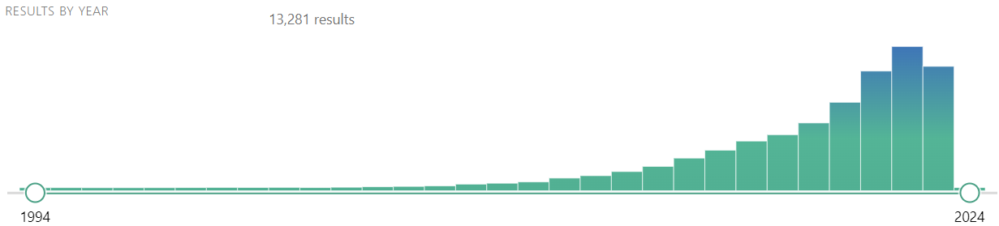
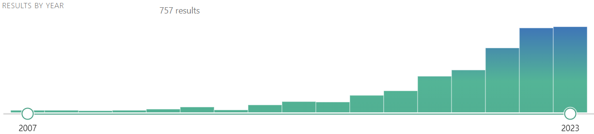

Cma
Subtitle
zpasses
- use trends of(GS + psychinfo)
- check writing (stopped at endnote)
- figure out footnotes
- figure out preambles
- navbar icon hover text (tooltip)
- make certain | bigger
- get trends of ma pubmed
- make graph of AITEC + ADTET
- prove AITE [PO]
- prove AITE [Algebra]
- product-coef from PO
- direct effect from PO (supp)
- Add GH icon
- change expectations
- use the delta and eta definitions of direct + indirect effects
- Change math delimiters
- Heterogeneities
- Moderation + mediation
- Instruments
- Fix all the DAGs and make the style consistent
- brief note on the temporality of
- pass through figure captions
- pass to see where
synmakes sense - fix intro
- fix endnote
- double check seq ignorability
- mediation with moderation (with direct effects)
- JII application example
- Digraph hover names
Statement of need
Mediation analysis is not new (Judd and Kenny 1981). But it is to me. Mediation analysis aims to shed light on mechanisms between some exposure and some outcomes of interest. It’s an ambitious aim but has potential implementational and policy implications. Funding agencies (e.g., National Institute of Mental Health, NIH) for research grants encourage or require mediation analyses of interventions to understand mechanisms (Nguyen, Schmid, and Stuart 2021). Since results from mediation analysis may influence policy and practice, I thought I should at least gain some literacy on it. “Mediation analysis” is also increasingly popular. FIGURE should sum up this statement of need.
(Un-mediated) Treatment effects
First, to set some context with the causal inference approach with (model-agnostic) potential outcomes (PO) without mediation. In a simple setup with just treatment \(T\) and an outcome of interest \(Y\) (without the mediator \(M\) for now), the main estimand of interest is the average treatment effect (ATE) defined as \[
\tau \equiv \E\big[Y(1)\big] - \E\big[Y(0)\big],
\tag{1}\]
for the simplest scenario where \(T\) is a binary split: \[ T = \begin{cases} 1 & \text{if treated}, \\ 0 & \text{if untreated}. \end{cases} \]
\(Y(1)\) is the potential outcome with treatment (\(T=1\)) and \(Y(0)\) is the potential outcome without treatment (\(T=0\)). For a given individual, only \(Y(1)\) is observed with treatment. \(Y(0)\) is the counterfactual.1
1 Aka missing data as the ‘’Fundamental Problem of Causal Inference’’ (Holland 1986).
ATE, Equation 1). Arrows imply causality.In reality, all we observe are outcomes conditional on the treatment \([Y|T=t]\) and the statistical solution (Holland 1986) is via differences in averages \[ \E\big[Y \big|T=1\big] - \E\big[Y\big|T=0\big] \]
which reduces to Equation 1 under certain conditions such as the independence assumption:2
2 The conditional analog is similar for some baseline set of observables \(\textbf{X}\): \(\big[Y_i(t) \ind T_i\big] \Big| \textbf{X}_i\) (e.g., Imbens 2004; Angrist and Pischke 2009). This vignette will largely abstract away from \(\textbf{X}\) for simplicity.
\[ Y_i(t) \ind T_i. \tag{2}\]
The simplest way to estimate \(\tau\), given the assumptions are met, is \[ Y_i = \alpha + \tau T_i + \varepsilon_i. \]
Mediation through the lens of potential outcomes
I was wondering how mediation analysis fits into this barebones potential outcomes framework. Most publications with mediation analysis are in the Baron and Kenny tradition (Judd and Kenny 1981; Baron and Kenny 1986; MacKinnon 2012) (hereafter, the classical mediation approach). Inherent in mediation analysis, whether made explicit or not, is a causal hypothesis (Nguyen, Schmid, and Stuart 2021). T causes Y through M. There is, however, nothing in the mechanics of the classical approach that guarantees that uni-direction.3
3 A “mediation analysis” without this explicit path (partly implied by the temporal ordering) is really just a “third variable analysis”, which is an analysis of association (Nguyen, Schmid, and Stuart 2021).
So mediation could benefit from, or deserves, explicit causal thinking (Nguyen, Schmid, and Stuart 2021).4 Work to think of mediation in the causal inference framework started as early as Robins and Greenland (1992) and as recent (at time of writing) as Stuart et al. (2022) (hereafter the causal inference approach).5 With a proposed mediation path through a variable \(M\), the analog of the ATE (from Equation 1) is now: 6
4 This is different from other regular regression analyses, where, depending on the target and assumptions, both causal and conditional association interpretations are valid (Nguyen, Schmid, and Stuart 2021).
5 Separate issue of temporal ordering of T, M, and Y (not covered in this vignette. See P49 of Stuart et al 2021 for more references.)
6 This PO notation is similar to that in Imbens (2004), Angrist and Pischke (2009), Kosuke Imai, Keele, and Tingley (2010); Nguyen, Schmid, and Stuart (2021), etc. Pearl (2001), Hernan and Robins (2023), etc., have slightly different PO notations.
\[ \tau = \E\big[Y\left(1, M(1)\right)\big] - \E\big[Y(0, M(0))\big], \tag{3}\] where (like \(T\)) the simplest scenario is: \[ M = \begin{cases} 1 & \text{if T = 1}, \\ 0 & \text{if T = 0}, \end{cases} \] where the value of the mediator \(M\) also depends on \(T\).
From the total effect (Equation 3),7 we can start decomposing into the direct and indirect effects.8 Apparently, there are two different sets of estimands (Nguyen, Schmid, and Stuart 2021). No one told me that…
7 The total effect (TE) is used in place of the ATE in the language of mediation analysis (e.g., Judd and Kenny 1981; Robins and Greenland 1992; K. Imai, Keele, and Yamamoto 2010; Bullock, Green, and Ha 2010; Nguyen, Schmid, and Stuart 2021; Hernan and Robins 2023).
8 While going through a bunch of resources from different fields, I came across a suggestion that the direct effect should really be called the unmediated effect (although I was unable to trace back the source). The notion is that the direct effect is no more a direct effect than the residual is a Gaussian error. If there are unspecified mediation pathway(s), the direct effect will subsume those.
The direct effect is: \[ \zeta(t) \equiv \E\big[Y_i(1, M_i(t))\big] - \E\big[Y_i(0, M_i(t))\big], \; t \in \{0, 1\}. \tag{4}\]
The indirect effect is: \[ \delta(t) \equiv \E\big[Y_i(t, M_i(1))\big] - \E\big[Y_i(t, M_i(0))\big], \; t \in \{0, 1\}. \tag{5}\]
Varying \(t\) gives two different sets of estimands for each of \(\delta\) and \(\zeta\).
Set A: ADTE and AITE
The first set of estimands for direct and indirect effects are the average direct treatment effect \[ ADTE \equiv \zeta(0) = \underbrace{\E\big[Y(1,M(0))\big] - \E\big[Y(0,M(0))\big]}_{\text{effect of $T$ on $Y$ when $M$ is held at M(T=0)}} \tag{6}\] and the average indirect treatment effect. \[ AITE \equiv \delta(1) = \underbrace{\E\big[Y(1,M(1))\big] - \E\big[Y(1,M(0))\big]}_{\text{effect of $M$ on $Y$ when $T=1$}} \tag{7}\]
The decomposition of the ATE into the two effects follows directly from Equation 3:
\[\begin{align} \underbrace{\E\big[Y(1, M(1))\big] - \E\big[Y(0, M(0))\big]}_{\text{total effect}} &= \E\big[Y(1, M(1))\big] \underbrace{- \E\big[Y(1,M(0))\big] + \E\big[Y(1,M(0))\big]}_{\text{additive identity}} - \E\big[Y(0, M(0))\big]\\ &= \underbrace{\E\big[Y(1, M(1))\big] - \E\big[Y(1,M(0))\big]}_{\text{AITE}} + \underbrace{\E\big[Y(1,M(0))\big] - \E\big[Y(0, M(0))\big]}_{\text{ADTE}} \end{align}\]
The AITE, in particular, is also known as the causal mediation effect.9 This decomposition is suitable when there are strong priors about a direct effect but unclear priors on whether an indirect effect also exists. An example could be where \(T\) is a STEM degree that raises labor market value \(Y\) through some technical competency. On the other hand, it is unclear whether additional benefits also arise through networking with peers \(M\).
9 Sometimes ACME (average causal mediation effect, K. Imai, Keele, and Yamamoto 2010; Kosuke Imai, Keele, and Tingley 2010). ADTE is aka the natural direct effect (NDE). AITE is aka the natural indirect effect (NIE). That’s Pearl’s language (Pearl 2001). Another one is pure direct effect and total indirect effect (e.g., Robins and Greenland 1992; Hernan and Robins 2023).
Another example could be where \(T\) is a dietary program (e.g., a low-whatever-the-frack-is-the-new-fad diet) that lowers diabetic risk \(Y\), but it is unclear if the reduction in diabetic risk also comes from weight loss \(M\). If not, targeting weight loss may be of limited efficacy. This is of practical implication since it informs where and what type of intervention should occur.
Set B: ADTET and AITEC
The second set of estimands that decompose the ATE are the average direct treatment effect wrt the treated
\[ ADTET \equiv \zeta(1) = \underbrace{\E\big[Y(1,M(1))\big] - \E\big[Y(0, M(1))\big]}_{\text{effect of T when $M$ is held at M(T=1)}} \tag{8}\]
and the average indirect treatment effects wrt to controls \[ AITEC \equiv \delta(0) = \underbrace{\E\big[Y(0,M(1))\big] - \E\big[Y(0, M(0))\big]}_{\text{effect of M when $T=0$}}. \tag{9}\]
Decompositon again follows directly:
\[ \underbrace{\E\big[Y(1, M(1))\big] - \E\big[Y(0, M(0))\big]}_{\text{total effect}} = \underbrace{\E\big[Y(1,M(1))\big] - \E\big[Y(0, M(1))\big]}_{\text{ADTET}} + \underbrace{\E\big[Y(0,M(1))\big] - \E\big[Y(0, M(0))\big]}_{\text{AITEC}}. \]
This decomposition is useful when there are strong priors about an indirect mediating path but unclear priors about a direct effect. An example could be where \(T\) is an MBA degree with a weak connection labor market value \(Y\) through some technical competency but where benefits mainly arise through networking in the MBA program \(M\).
Classical mediation approach
In the classical mediation approach, in addition to
\[ Y_i = \alpha + \beta T_i + \varepsilon_i, \]
two equations are estimated in a structural equation model(Baron and Kenny 1986). One modeling T and its effect on M. The other modeling the effect of T and M on Y.
\[ M_i = \alpha_0 + \alpha_1 T_i + \varepsilon_{1i} \tag{10}\] \[ Y_i = \beta_0 + \beta_1 T_i + \beta_2 M_i + \varepsilon_{2i} \tag{11}\]
Equation 10 and Equation 11 are estimated separately. The mediation effect is observed via the “product-of-coefficients” method as (\(\hat{\alpha_1} \hat{\beta_2}\))—quite literally the effect of \(T\) on \(M\) multiplied by the effect of \(M\) on \(Y\). The direct effect of \(T\) on \(Y\) would be observed with \(\hat{\beta_1}\).
The conditional analog of this with a set of covariates \(\textbf{X}\) should follow closely (Judd and Kenny 1981).
Classical mediation approach: Common grounds
How would the causal inference approach with potential outcomes connect to the classical approach?
The reduced form (from Equation 10 and Equation 11) is: \[ \E\big[Y_i\big|T_i,M_i\big] = \beta_0 + \beta_1 \E[T_i] + \beta_2 \E[M_i]. \tag{12}\]
Together with the definition of the AITE (Equation 7), this gives \[\begin{align}
AITE
&=\E\big[Y_i (1, M_i(1))\big] - \E\big[Y_i (1, M_i(0))\big] \\
&=\Big\{
\beta_0 + \beta_1 (1) + \beta_2 (\alpha_0 + \alpha_1 (1)
\Big\} -
\Big\{
\beta_0 + \beta_1 (1) + \beta_2 (\alpha_0)
\Big\}\\
&=\Big\{\alpha_0\beta_2 + \alpha_1\beta_2\Big\} - \Big\{\alpha_0\beta_2 \Big\}\\
&=\alpha_1 \beta_2
\end{align}\] which is exactly the same mediation effect proposed by the “product-of-coefficients” from the structural equations above (Section 6).10
10 Section 14.2 in the Supplementary appendix shows that what falls out from the other three estimands is also consistent with the product of coefficients.
If the classical and causal inference approaches both agree on the underlying intuition of mediation, why use potential outcomes? One reason is it helps clarify what the identification assumptions are.
Biases, bounds, and assumptions
What we only observe in the real world is \([Y_i \big|T = t, M = m]\), \(t \in \{0, 1\}\), \(m \in \{0, 1\}\). We also only observe actualized potential outcomes \(Y(t, m)\) for the corresponding \(m\) and \(t\) values. The observed difference only converges to \(\delta(t)\) (AITE) under certain conditions. The observed difference in a mediated effect, given that treatment is “switched on” \(t=1\), is
\[ \begin{aligned} &\E\big[Y\big|T=1, M = 1\big] - \E\big[Y\big|T=1, M=0\big] \\ &=\E\big[Y(1,1)\big|T=1, M=1\big] - \E\big[Y(1,0)\big|T=1, M=0\big] \\ &=\E\big[Y(1,1)\big|M=1\big] - \E\big[Y(1,0)\big|M=0\big] \qquad\qquad (\text{from }Y_i(t,m) \ind T_i) \end{aligned} \tag{13}\]
where, even given randomization of \(T\) (analogous to Equation 2 in the un-mediated case), the selection issue with \(M\) persists. It will carry its own selection bias unless additional assumptions are imposed. The above only reduces to the AITE by imposing additional assumptions on the statistical independence of \(M\),
\[ \begin{aligned} &\E\big[Y(1,1)\big|M=1\big] - \E\big[Y(1,0)\big|M=0\big]\\ &= \E\big[Y(1,1)\big|M=1\big] - \underbrace{\E\big[Y(1, 0)\big|M=1\big] + \E\big[Y(1, 0)\big|M=1\big]}_{\text{additive identity}} - \E\big[Y(1,0)\big|M=0\big] \\ &=\underbrace{\E\big[Y(1,1) - Y(1, 0)\Big|M=1\big]}_{\text{analog to AITE}} + \underbrace{\E\big[Y(1, 0)\big|M=1\big] - \E\big[Y(1,0)\big|M=0\big]}_{\text{selection into M}} \end{aligned} \tag{14}\]
where \(E[Y(1, 0)|M=1]\) in the first equality is a counterfactual—what would potential outcome be for people with the \(M\) switched off \(m=0\) given that it is actually switched on \(m=1\) (concrete example later below). The second equality collects terms into the underlying mediation estimand and an additional bias component.11
11 Section 14.3 in the Supplementary appendix offers an alternative algebraic insight of the bias.
There is a tendency for this bias to be positive,12 and, therefore, overstate the mediation effect. Take, as a concrete example, a case where we are interested in child income \(Y\), parent income \(T\), and college attendance \(M\) in a classic case of intergenerational income mobility. Parent income affects child income, but also potentially through access to better education. The expected sign of the AITE should be positive. The first part of the bias is the counterfactual of the potential income of the child of not going to college, given that she did. Conditional on parent income, the child that goes to college should have qualities (non-existent in the child that never goes to college) that would be helpful for labor market success, and, to this extent, suggest that the bias component is \(> 0\). Hence, without intervening in the assignment of \(M\), the estimated mediation effect tends to be biased. But the observed effect may still be useful to provide optimistic bounds for the underlying mediation effect.13
12 Or, generally, share the same sign as the AITE.
13 This bound is not a statistical property. Instead, the bound is based on counterfactual reasoning about what the plausible potential outcomes are from domain understanding.
The last line in Equation 14 only reduces to the true AITE by imposing additional assumptions.
\[ \Big\{ Y_i(t, m), M_i(t')\Big\} \ind T_i \tag{15}\] \[ \big[Y_i(t', m) \ind M_i(t)\big] \Big| T_i = t \tag{16}\]
First, for a causal interpretation, the treatment assignment \(T\) has to be statistically orthogonal to the potential outcomes and the potential mediators. This should usually be satisfied with randomization of \(T\) as in the usual unmediated case (Section 2). This assumption was imposed in the last equality of Equation 13. Second, given the actual value \(T_i = t\), the mediator \(M\) should be statistically orthogonal to the potential outcome. The standard proposed solution to achieve this is to subject \(M\) to experimental manipulation, just as with \(T\).14 The above is the sequential ignorability assumption since the assumptions are made sequentially (K. Imai, Keele, and Yamamoto 2010).
14 Section 14.4 in the Supplementary appendix shows an example of how the AITE cannot be identified even with randomization if heterogeneities in effects exist.
In addition, there is a (slightly more subtle) assumption with the common data support \(T\) (and \(M\)). \[ \exists \theta > 0: \ \theta \leq \E \left[ T_i = t \right] \leq (1-\theta), \qquad t \in \{0, 1\} \] With mediation, an additional assumption applies to the mediator: \[ \exists \eta > 0: \ \eta \leq \E \left[ M_i = m \big| T_i = t \right] \leq (1-\eta), \qquad t \in \{0, 1\}. \]
Loosely speaking, with mediation, twice the identification assumptions are needed.
Mediation and instrumental variables
What if one thinks that the effect of \(T\) should only pass purely through \(M\)? In this case, the graph in Figure 2 reduces to Figure 5. This turns out to be the causal graph of the instrumental variables approach. However, the catch now is that the set of identification assumptions changes, with the sequential ignorability (Equation 15, Equation 16) no longer relevant (K. Imai, Keele, and Yamamoto 2010). Instead, the identification assumptions are those canonically established in the instrumental variable framework, such as that of exclusion restriction (Angrist, Imbens, and Rubin 1996). Moreover, the instrumental variable framework by design a priori rules out other causal mechanisms. This may be less than ideal for many health and social science research (K. Imai, Keele, and Yamamoto 2010).
Mediation with moderation
Mediation is not moderation. Mediation allows the treatment \(T\) affect the outcome of interest \(Y\) through some proposed mediator \(M\) indirectly. Moderation, on the other hand, allows for the effect of \(T\) to differ by levels of the moderator (e.g., vaccine efficacy differing by age groups).15 But it turns out the mediation analysis framework also supports moderation with an additional moderating term \((M_i \times T_i)\) in Equation 11.
15 Regarding temporal ordering, moderators should be pre-exposure baselines (related to colliders/bad controls not covered here), while mediators should be post-exposure. Analyses termed as “mediation analyses”, but where it is impossible for \(T\) to influence \(M\) because of temporal ordering, are really “third variable analyses” (Nguyen, Schmid, and Stuart 2021). Section 14.1 shows a slight trend in “causal mediation analysis” only very recently.
\[ \begin{aligned} M_i &= \alpha_0 + \alpha_1 T_i + \varepsilon_{1i}\\ Y_i &= \beta_0 + \beta_1 T_i + \beta_2 M_i + \beta_3 M_i T_i + \varepsilon_{2i} \end{aligned} \tag{17}\]
Again, using the definition of the AITE (Equation 7) \[\begin{align}
&AITE \equiv \delta(1) \\
&=\E\big[Y_i(1,M_i(1))\big] - \E\big[Y_i(1,M_i(0))\big] \\
&=\Big\{\beta_0 + \beta_1 + \beta_2(\alpha_0 + \alpha_1) +\beta_3 (\alpha_0 + \alpha_1) \Big\}
- \Big\{\beta_0 + \beta_1 + \beta_2(\alpha_0) + \beta_3 (\alpha_0) \Big\}\\
&=\beta_2 \alpha_1 + \beta_3 \alpha_1\\
&=\alpha_1(\beta_2 + \beta_3)
\end{align}\]
which is just the effect of \(T\) on \(M\) (the \(\alpha_1\)) multiplied by the coefficients of \(M\) in the outcome regression (\(\beta_2\) and \(\beta_3\)).
So, the mediation framework also directly allows for the mediator to have a role as a moderator. Compared to just \(\alpha_1\beta_2\) from Section 7, the additional \(\alpha_1\beta_3\) captures the additional effect, if any, of the mediator \(M\) for those individuals in the treatment group \(T=1\). \(\alpha_1\beta_3\) is also another way of describing how \(M\) moderates the effect of the treatment \(T\). If it turns out \(\beta_3 = 0\), then this implies no moderating relationship exists, and the model reverts to that in Equation 11.
Application example: JOBS II
JOBS program) have been found to have lower levels of depressive symptoms (Vinokur and Schul 1997).To give another concrete example, Kosuke Imai, Keele, and Tingley (2010) (a running reference in this note) use the JOBS II experiment from the psychology literature on (un)employment and mental health (e.g., Vinokur and Schul (1997)). JOBS (Job Opportunities and Basic Skills training) II is a randomized field experiment. The goal was to identify the effects of a job training intervention on employment status and also on the mental wellbeing of the job seekers.16
16 JOBS II had 1,801 participants randomized into treatment and control groups. The treatment group participated in job skills workshops that taught job search skills and coping mechanisms. I.e., they got the JOBS program. For mental wellbeing, the key outcome measure is a continuous measure of depressive symptoms using the Hopkins Symptom Checklist (subscale of 11 items).
An extension of this interest is also to understand mediator factors. Past studies found the program helpful in reducing depressive symptoms (Figure 6). If true, what would be a mediating factor? Credibly identifying mediator factor(s) has implications for future programs. Furthermore, would the mediating factor be moderated by treatment status? This would help identify high-risk subgroups that can be more effectively screened in future programs (Vinokur and Schul 1997).
The mediator that is evaluated is job-search self-efficacy.17 Importantly, self-efficacy is not randomized, so the second ignorability assumption is not satisfied by design. Instead, baseline covariates measured before the workshops (e.g., education, income, race, marital status, age, sex, previous occupation, and the level of economic hardship) are adjusted for. It turns out that a mediation effect exists. The estimated mediation effect is negative, which implies that JOBS helped reduce depressive symptoms by increasing job-search self-efficacy. The direct effect and the total effects, however, have null estimated effects. Moderating the mediator also yields null estimated effects. Figure 7 summarizes the relationship.
17 Self-efficacy comes from six (five-point scale) items on the degree of confidence in being able to successfully perform six essential job-search activities (e.g., completing job application/resume, using social network to discover promising job openings, getting point across in a job interview; Vinokur and Schul (1997)).
* denotes estimates found to be statistically distinguishable from zero at conventional levels.Endnote
No new grounds have been broken by me here. This vignette is merely my attempt at parsing and then synthesizing different resources that already exist (some as recent as Stuart et al. (2022) in the Journal of Causal Inference) in order to gain some scientific literacy on (causal) mediation analysis. A lot of studies use mediation to directly imply some kind of directional effect. This clearly alludes to a causal channel. Yet it’s rarely clear what the estimands are or what identification assumptions are needed. This tracks with the exegesis by Bullock, Green, and Ha (2010) and Nguyen, Schmid, and Stuart (2021). What’s covered here should make things more transparent. If there’s some error you would like to point out or have some comment, feel free to . Also, not everything is covered here, but the list of canonical resources should lead to more details.
Resources
Supplementary appendix
Trends in mediation analysis


Classical mediation approach: ADTE, ADTET, AITEC
Together with the definition of the ADTE (Equation 7), this gives \[\begin{align} ADTE = \zeta(0) &=\E\big[Y_i (1, M_i(0))\big] - \E\big[Y_i (0, M_i(0))\big] \\ &=\Big\{ \beta_0 + \beta_1 (1) + \beta_2 (\alpha_0) \Big\} - \Big\{ \beta_0 + \beta_1 (0) + \beta_2 (\alpha_0) \Big\}\\ &=\beta_1, \end{align}\] which is exactly the same \(\beta_1\) coefficient in Equation 11 capturing the direct effect of \(T\) on \(Y\).
If the M is switched on \(m=1\), we get the same result for ADTET (Equation 8): \[\begin{align}
ADTET = \zeta(1)
&=\E\big[Y_i (1, M_i(1))\big] - \E\big[Y_i (0, M_i(1))\big] \\
&=\Big\{
\beta_0 + \beta_1 (1) + \beta_2 (\alpha_0 + \alpha_1 (1)
\Big\} -
\Big\{
\beta_0 + \beta_1 (0) + \beta_2 (\alpha_0 + \alpha_1 (1))
\Big\}\\
&=\beta_1.
\end{align}\]
The AITEC Equation 9 also reduces to the product-of-coefficients \(\alpha_1 \beta_2\):
\[\begin{align} AITEC = \delta(0) &=\E\big[Y_i (0, M_i(1))\big] - \E\big[Y_i (0, M_i(0))\big] \\ &=\Big\{ \beta_0 + \beta_1 (0) + \beta_2 (\alpha_0 + \alpha_1 (1) \Big\} - \Big\{ \beta_0 + \beta_1 (0) + \beta_2 (\alpha_0) \Big\}\\ &=\alpha_1 \beta_2. \end{align}\]
Biases, bounds, and assumptions: Algebraic version
Bullock, Green, and Ha (2010) offer algebraic perspective of the bias seen in Section 8. Starting with the linear structural equation model: \[\begin{align} Y_i &= \alpha_1 + \beta_1 T_i + \varepsilon_{1i}\\ M_i &= \alpha_2 + \beta_2 T_i + \varepsilon_{2i}\\ Y_i &= \alpha_3 + \beta_3 T_i + \gamma M_i + \varepsilon_{3i}\\ \end{align}\]
The probability limit of the estimated mediated effect \(\hat{\gamma}\) (Bullock, Green, and Ha 2010) is \[ \underbrace{\gamma}_{\text{AITE}} + \underbrace{\frac{cov(\varepsilon_{2i}, \varepsilon_{3i})}{var(\varepsilon_{2i})}}_{\text{asymptotic bias}}, \] where \(cov(\varepsilon_{2i}, \varepsilon_{3i})\) is the covariance of the error terms in the un-mediated model and the mediated model. So \(\hat{\gamma}\) is only consistent if the covariance term reduces to 0, which is unlikely because whatever unmeasured \(X_i\) is in \(\varepsilon_{2i}\) should also be present in \(\varepsilon_{3i}\) (like unmeasured qualities of a good worker in Section 8). Moreover, the sign of \(cov(\varepsilon_{2i}, \varepsilon_{3i})\) tend to coincide with the sign of \(\gamma\), leading to the overstatement of the magnitude of the mediation effect \(\gamma\), if any (as discussed in Section 8).
Heterogeneities in mediation effect
Not as much is said about heterogeneities in mediation effect it seems. Bullock, Green, and Ha (2010) does a treatment of this. Apparently, heterogeneities together with the product-of-coefficients method can be problematic, even when \(M\) is already subject to experimental intervention.
A similar model to Equation 10 and Equation 11 with heterogeneities in effect is \[\begin{align} M_i &= \alpha_1 + \beta_{1i} T_i + \varepsilon_{1i}\\ Y_i &= \alpha_2 + \beta_{2i} T_i + \gamma_{i} M_i + \varepsilon_{2i} \end{align}\]
To see why heterogeneity could be bad without simulations, suppose we know that the true effects for two groups, A and B (equal proportions), are as follow: \[\begin{align} \beta_{1A} &= 2\\ \gamma_{A} &= 2 \end{align}\] and \[\begin{align} \beta_{1B} &= -3\\ \gamma_{B} &= -1. \end{align}\]
The mediation effect for group A is \(\beta_{1A}\gamma_A = 4\) and for group B it is \(\beta_{1B}\gamma_B = 3\). So the average of the two (given equal group proportion) is \(\frac{4+3}{2} = 3.5\).
But conventional estimate will not give \(3.5\). This is because \[ \bar{\beta_i} = \frac{\beta_{1A}+\beta_{1B}}{2} = \frac{2 - 3}{2} = -0.5 \] and \[ \bar{\gamma} = \frac{\gamma_{A}+\gamma_{B}}{2} = \frac{2-1}{2} = 0.5 \] The conventional estimate from product of coefficients is \(-0.25\) (\(\neq3.5\)). This resembles basic probability where
\[ \E\big[\beta_{1i}\big]\E\big[\gamma_i\big] = \E\big[\beta_{1i} \gamma_i\big] - \underbrace{cov(\beta_{1i}, \gamma_i)}_{\neq 0} \] so the product of the averages do not equal the average of the product unless that additional covariance term is zero. So even if \(M\) has been randomized, we still cannot identify the AITE (mediation effect) if heterogeneities exist (Bullock, Green, and Ha 2010).
Mediation with moderation: Direct effect
With moderation (as specified in Equation 17), and from the definition of the ADTE (\(\zeta(1)\) from Equation 4):
\[\begin{align} &ADTE \equiv \zeta(1) \\ &=\E\big[Y_i(1,M_i(0))\big] - \E\big[Y_i(0,M_i(0))\big] \\ &=\Big\{\beta_0 + \beta_1 + \beta_2(\E[M|T=0]) +\beta_3 (\E[M|T=0]) \Big\} - \Big\{\beta_0 + \beta_2(\E[M|T=0]) \Big\}\\ &= \beta_1 + \alpha_0\beta_3. \end{align}\]
So the ADTE is the effect of \(T\) on \(Y\) and an additional effect which is the product of a constant for \(M\) and its effect moderated with \(T\). If no moderation exist (i.e., \(\beta_3=0\)), then the above reduces to just \(\beta_1\) as in Section 14.2. In other words, mediation with moderation (allowing for the interaction of the mediator and treatment status) is the general case. No allowing for interactions is the special case.